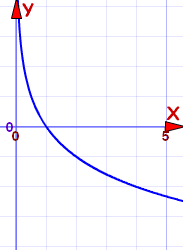
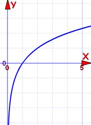

Logarithmic Function Reference
This is the Logarithmic Function:
f(x) = loga(x)
a is any value greater than 0, except 1
Properties depend on value of "a"
- When a=1, the graph is not defined
- Apart from that there are two cases to look at:
a between 0 and 1 |
a above 1 |
|
|  |  | |
Example: f(x) = log½(x) |
Example: f(x) = log2(x) |
|
For a between 0 and 1
|
For a above 1:
|
Plot the graph here (use the "a" slider)
In general, the logarithmic function:
- is always on the positive side of (and never crosses) the y-axis
- always intersects the x-axis at x=1 ... in other words it passes through (1,0)
- equals 1 when x=a, in other words it passes through (a,1)
- is an Injective (one-to-one) function
Its Domain is the Positive Real Numbers: (0, +∞)
Its Range is the Real Numbers: 
Inverse
loga(x) is the Inverse Function of ax (the Exponential Function)
So the Logarithmic Function can be "reversed" by the Exponential Function.
The Natural Logarithm Function
This is the "Natural" Logarithm Function:
f(x) = loge(x)
Where e is "Eulers Number" = 2.718281828459... etc
But it is more common to write it this way:
f(x) = ln(x)
"ln" meaning "log, natural"
So when you see ln(x), just remember it is the logarithmic function with base e: loge(x).

Graph of f(x) = ln(x)
At the point (e,1) the slope of the line is 1/e and the line is tangent to the curve.